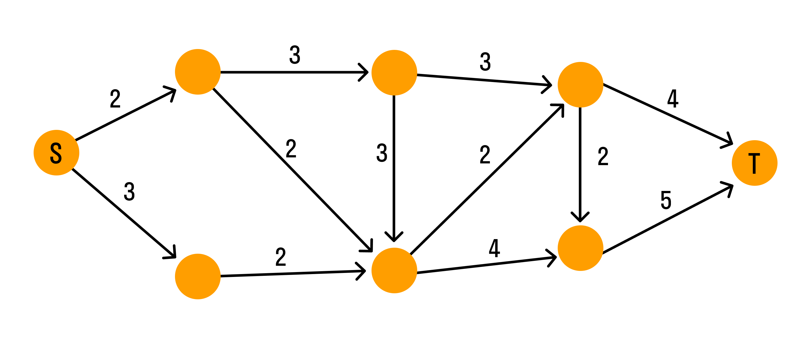

На основе теории графов создали разные методы решения прикладных задач, в которых в виде графов можно моделировать сложные системы. В этих моделях узлы содержат отдельные компоненты, а ребра отражают связи между компонентами.
Графы и задача о потоках
Система водопроводных труб в виде графа выглядит так:

рис.12
Каждая дуга графа отображает трубу. Числа над дугами (весы) — пропускная способность труб. Узлы — места соединения труб. Вода течёт по трубам только в одном направлении. Узел S — источник воды, узел T — сток.
Задача: максимизировать объём воды, протекающей от источника к стоку.
Для решения задачи о потоках можно использовать метод Форда-Фалкерсона. Идея метода в том, чтобы найти максимальный поток по шагам.
Сначала предполагают, что поток равен нулю. На каждом последующем шаге значение потока увеличивается, для чего ищут дополняющий путь, по которому поступает дополнительный поток. Эти шаги повторяют до тех пор, пока существуют дополнительные пути.